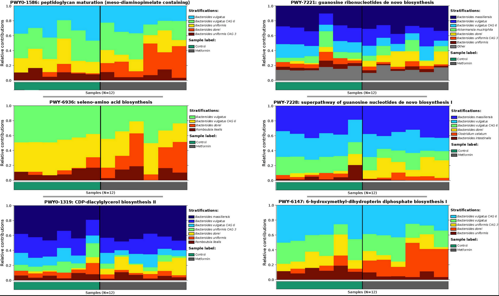
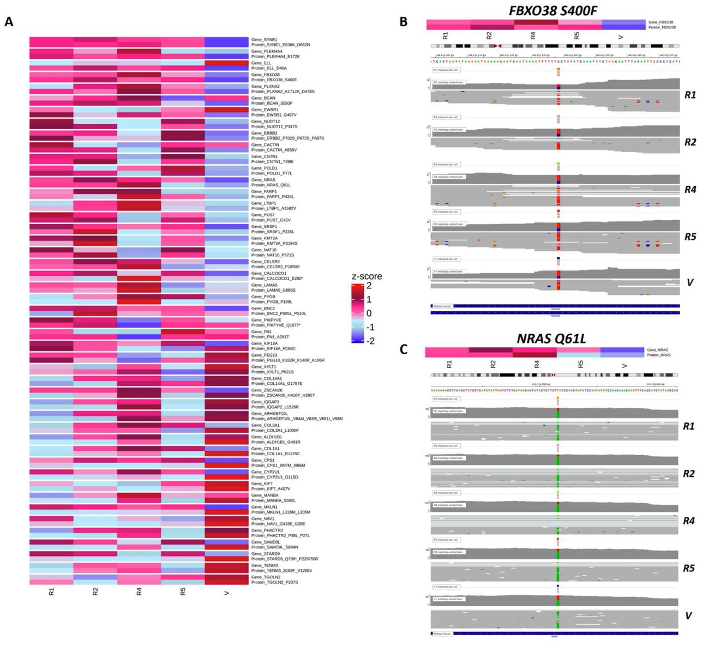

2022 - 2023
Short-Term Metformin Treatment Enriches Bacteroides dorei in an Obese Liver Steatosis Zucker Rat Model
Frontiers in Microbiology
Abstract: Obesity is the leading cause of health-related diseases in the United States and World. Previously, we reported that obesity can change gut microbiota using the Zucker rat model. Metformin is an oral anti-hyperglycemic agent approved by the FDA to treat type 2 diabetes (T2D) in adults and children older than 10 years of age. The correlation of short-term metformin treatment and specific alterations to the gut microbiota in obese models is less known. Short-term metformin has been shown to reduce liver steatosis. Here we investigate the effects of short-term metformin treatment on population of gut microbiota profile in an obese rat model. Five week old obese (n = 12) female Zucker rats after 1 week of acclimation, received AIN-93 G diet for 8 weeks and then rats were randomly assigned into two groups (6 rats/group): (1) obese without metformin (ObC), or (2) obese with metformin (ObMet). Metformin was mixed with AIN-93G diet at 1,000 mg/kg of diet. Rats were weighed twice per week. All rats were sacrificed at the end of metformin treatment at 10 weeks and fecal samples were collected and kept at −80°C. Total microbial DNA was collected directly from the fecal samples used for shotgun-metagenomics sequencing and subsequently analyzed using MetaPlAn and HUMAnN. After stringent data filtering and quality control we found significant differences (p = 0.0007) in beta diversity (Aitchison distances) between the ObC vs. ObMet groups. Supervised and unsupervised analysis of the log-ratios Bacteroides dorei and B. massiliensis vs. all other Bacteroides spp., revealed that B. dorei and B. massiliensis were enriched in the ObMet group, while the remaining Bacteroides spp. where enriched in the ObC group (p = 0.002). The contributional diversity of pathways is also significantly associated by treatment group (p = 0.008). In summary, in the obese Zucker rat model, short-term metformin treatment changes the gut microbiota profile, particularly altering the composition Bacteroides spp. between ObC and ObMet.

Associated Publication: https://doi.org/10.3389/fmicb.2022.834776
2021 - 2022
Proteogenomics analysis to identify acquired resistance-specific alterations in melanoma PDXs on MAPKi therapy
bioRxiv (Preprint)
Abstract: Therapeutic approaches to treat melanoma include small molecule drugs that target activating protein mutations in pro-growth signaling pathways like the MAPK pathway. While beneficial to the approximately 50% of patients with activating BRAFV600 mutation, mono- and combination therapy with MAPK inhibitors is ultimately associated with acquired resistance. To better characterize the mechanisms of MAPK inhibitor resistance in melanoma, we utilize patient-derived xenografts and apply proteogenomic approaches leveraging genomic, transcriptomic, and proteomic technologies that permit the identification of resistance-specific alterations and therapeutic vulnerabilities. A specific challenge for proteogenomic applications comes at the level of data curation to enable multi-omics data integration. Here, we present a proteogenomic approach that uses custom curated databases to identify unique resistance-specific alternations in melanoma PDX models of acquired MAPK inhibitor resistance. We demonstrate this approach with a NRASQ61L melanoma PDX model from which resistant tumors were developed following treatment with a MEK inhibitor. Our multi-omics strategy addresses current challenges in bioinformatics by leveraging development of custom curated proteogenomics databases derived from individual resistant melanoma that evolves following MEK inhibitor treatment and is scalable to comprehensively characterize acquired MAPK inhibitor resistance across patient-specific models and genomic subtypes of melanoma.

Associated Publication: https://www.biorxiv.org/content/10.1101/2022.02.15.480454v1.full (first author)